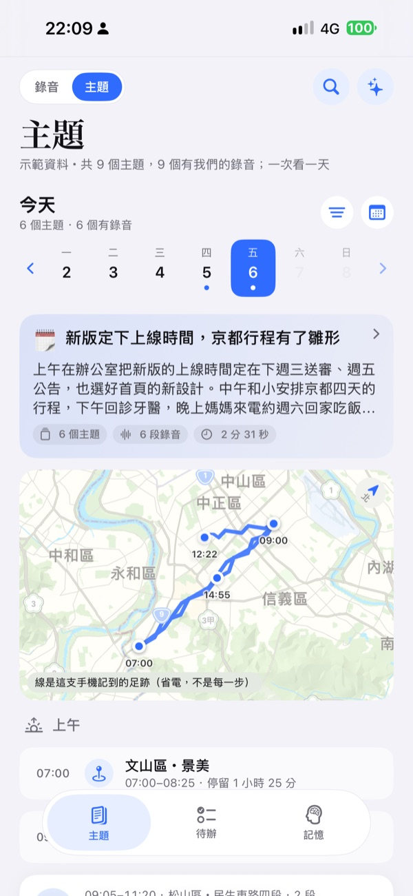
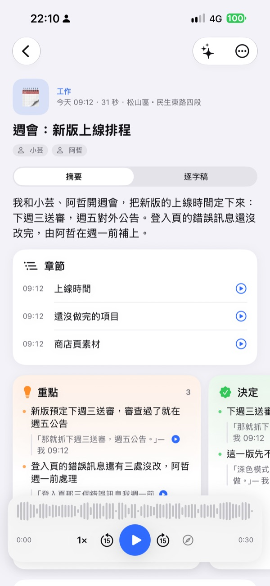
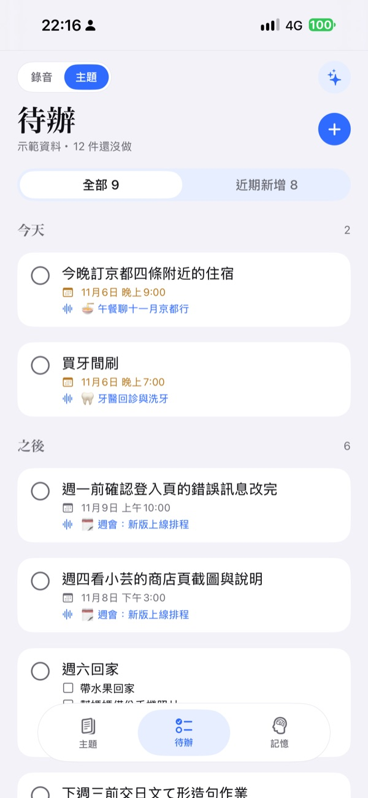

獨立開發的第三方 App · 搭配 Omi 吊墜
獨立開發的第三方 App · 搭配 Omi 吊墜
吊墜聽見的，整理成你的一天。資料留在你自己的後台。
Ear for Omi 是搭配 Omi 吊墜的 iPhone App。錄音送到你自己架設的後台，整理成主題、待辦與記憶，再帶回手機上看。
在 App Store 下載購買前，請確認這兩樣你都有
- 1Omi 吊墜穿戴式錄音裝置。App 用藍牙接收它的聲音。
- 2你自己的後台一個錄音後端，加上一個「第二大腦」知識服務，要自己架。後台不隨 App 提供。
少了任何一樣，App 只能看內建的示範資料。
同一天，兩種樣子
左邊是吊墜錄下來的一整天，右邊是後台整理之後。
一整天的錄音
- 我們先對一下新版什麼時候上線。
- 這是 A 版，清單式；這是 B 版，卡片式。
- 十一月那趟要不要先排一下？
- 上次補的地方有沒有不舒服？
- 這個週六中午回來吃飯，我煮滷肉。
- 今天我們複習て形。
整理成你的一天
- 🗓️週會：新版上線排程
- 🎨首頁改版設計討論
- 🍜午餐聊十一月京都行
- 🦷牙醫回診與洗牙
- 🏠週末回家吃飯
- 📚日文課：て形複習
一段對話，能變成什麼
整理由你的後台做，App 把結果帶回手機。下面的對話是 App 內建的示範資料。
一段對話，
一張主題卡
後台把一天的對話分成主題，每個主題有標題和一句摘要。按日子翻閱。
十一月那趟要不要先排一下？
住四條那邊吧，搭車跟吃飯都方便。
嵐山要早上八點前到，不然人很多。
我和小安吃牛肉麵，把京都四天的行程排了大概，先訂住宿。
重點和決定，
都附原話
每個重點下面是當時說的那句話，看得到整理的根據。
- 重點住宿訂在四條附近，去哪都方便
住四條那邊吧，搭車跟吃飯都方便。
— 我 - 決定這週先訂住宿，機票小安負責
住宿我今天晚上訂，機票交給你。
— 我
點一句話，
從那一句開始聽
點重點下面的原話，錄音就從那一句播放，逐字稿跟著走。
嵐山要早上八點前到，不然人很多。
- 我住四條那邊吧，搭車跟吃飯都方便。
- 小安嵐山要早上八點前到，不然人很多。
- 我那就排第二天早上。
一天結束，
看這一頁
當天的亮點、做了的決定、還沒解決的事，各自一張卡。
- 新版下週三送審、週五公告
- 首頁採用卡片式的 B 版
- 推播通知的文案還沒有人負責
- 京都的機票還沒訂
- 右下智齒旁邊用牙間刷比牙線好清
說過要做的事，
變成待辦
對話裡提到要做的事會列成待辦。有期限的到期會提醒，每一筆都連回它出自的主題。
登入頁那三個錯誤訊息我週一前改完。
一年一次的事，
快到了才出現
每年、每幾個月要做一次的事，平常收在「定期」，快到期才回到待辦列表。
關於你的事、你身邊的人
對話裡提到關於你的事，會成為一條記憶；常出現的人有自己的人物卡。
半年後再回來洗一次就可以了。
二〇一九年開始交往，喜歡旅行和拍照
還有這些
- 當日足跡地圖那天去過哪裡。要你選擇開啟才有；足跡存在手機，也送到你自己的第二大腦。
- 即時逐字稿說話的同時，草稿就出現在手機上，用 iOS 內建的語音辨識。
- 斷線補傳連不上後台時先存在手機，連上後補傳；吊墜離線時錄的也會同步。
- 吊墜按鈕語音指令按一下吊墜再開口：問過去的事、記一筆待辦、記住一件事。
- Widget 與鎖定畫面不用打開 App，就能從 Widget 和鎖定畫面切換靜音。
- 示範模式內建一天份的示範資料和示範錄音，可以先看介面。它不能取代後台。
App 實際的樣子
以下是 App 內建示範資料的畫面。



後台是什麼、怎麼取得
Ear for Omi 本身不整理任何東西。吊墜錄到的聲音，由兩個你自己架的服務處理：錄音後端把聲音變成逐字稿，第二大腦把逐字稿整理成主題、待辦與記憶。後台不隨 App 提供，來信就會收到程式和安裝說明。
- 吊墜
- iPhone
- 你自己的電腦
- 回到手機
常見問題
這是 Omi 官方的 App 嗎？
不是。Ear for Omi 是獨立開發的第三方用戶端，與 Based Hardware 沒有隸屬關係。
跟官方 App 有什麼不同？
錄音和資料送到你自己架設的後台。開發者沒有伺服器，不經手你的任何資料。
沒有後台能不能用？
不能。沒有自己的後台，App 只能看內建的示範資料。購買前請先確認你已經有後台。
後台哪裡拿？
後台不隨 App 提供。寫信到支援信箱，我們會把後台的程式和安裝說明寄給你。它怎麼運作、要準備什麼，寫在「後台」頁。
多少錢？
US$139，一次買斷、不訂閱。目前只在台灣的 App Store 上架，金額以 App Store 顯示的新台幣為準。